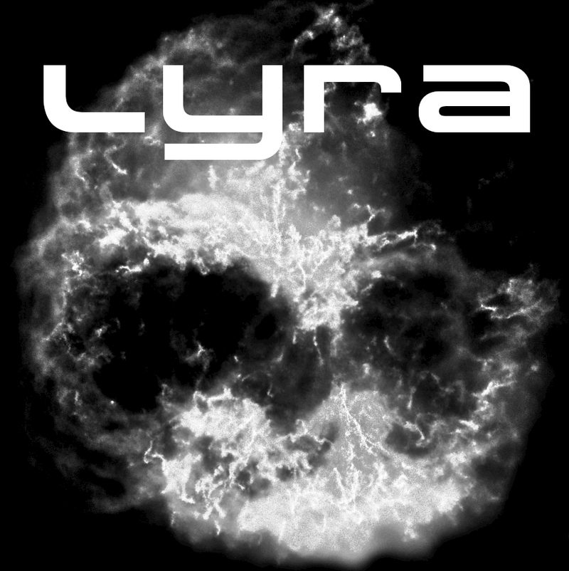
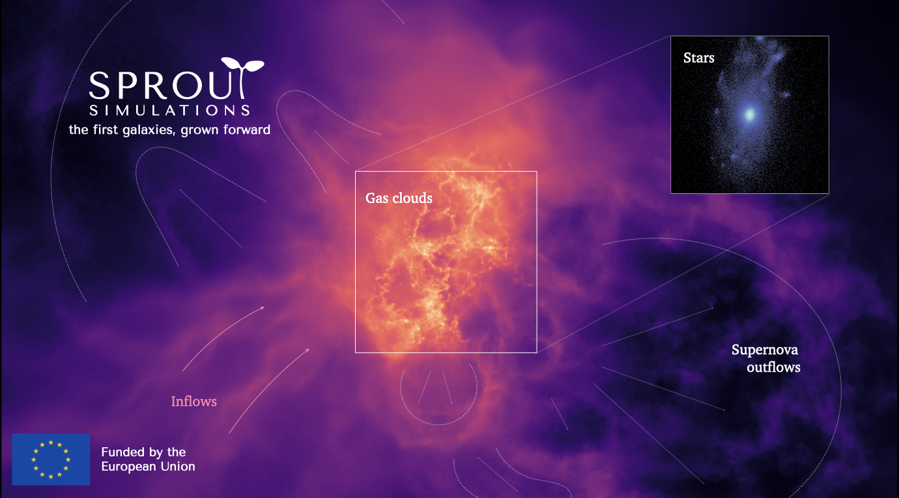
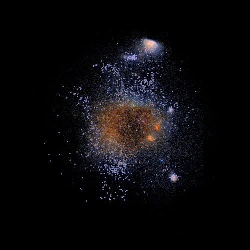

Thales A. Gutcke
Thales A. Gutcke
LYRA
A galaxy formation model for the moving-mesh code AREPO that resolves the multi-phase interstellar medium, single stars and individual supernova explosions in cosmological simulations.
Explore LYRA and simulation moviesI simulate how the smallest galaxies form, one star and one supernova at a time. Computational astrophysicist at the Institute for Astronomy, University of Hawai'i.
Every galaxy began its life as a dwarf. These small systems are the natural "sprouts" of cosmic structure: the first places where stars formed, and today the most accessible laboratories for testing how galaxies work.
SPROUT, funded by an ERC Starting Grant of about €1.67 million, will follow the smallest galaxies from cosmic dawn to the present day using ultra-high-resolution cosmological simulations. The aim is a single theoretical picture that connects the earliest galaxies seen by JWST and ALMA with the dwarf galaxies we observe around us today.
The project will be based at INAF Trieste, Italy, starting in October 2027, and will grow a research group over the coming years. Open PhD and postdoc positions will be announced here!

I study all things galaxies: their birth in the young Universe, their mergers and assembly, their star formation and interstellar medium. Dwarf galaxies are my favourite. They are small, ancient and dominated by dark matter, which makes them a unique window onto galaxy formation.
Until recently, faint dwarfs beyond the Local Group were almost impossible to observe. Euclid, JWST and Rubin are changing that. To give this wealth of data a physical context, I develop LYRA, a high-resolution galaxy formation model that follows individual stars and resolved supernovae.
Before my current fellowship in Hawai'i, I was a NASA Hubble Fellow at the IfA and at Princeton University, and an independent research fellow at the Max Planck Institute for Astrophysics in Garching. I did my PhD at the Max Planck Institute for Astronomy in Heidelberg.
Pronunciation: my name is said the German way, TAH-less GOOT-keh. I grew up between Berlin and Gümüşlük on the Turkish coast, not far from Miletus, home of the philosopher Thales I'm named after.

A galaxy formation model for the moving-mesh code AREPO that resolves the multi-phase interstellar medium, single stars and individual supernova explosions in cosmological simulations.
Explore LYRA and simulation movies
How elliptical galaxies stop forming stars, the circumgalactic medium in the NIHAO simulations, and what a metallicity-dependent initial mass function means for Milky Way-like galaxies.
Read the summariesInterested in the simulations? I'm happy to share LYRA outputs for new analysis projects, run analyses on demand for comparisons with observations, or talk about collaborating. Get in touch.
SPROUT ERC grant: Media INAF (Italian).
The REQUIEM survey on gas halos feeding early black holes: ESO press release, with coverage in
Also: LYRA in a Nature Astronomy meeting report, and my March for Science talk on Spektrum.de (German).